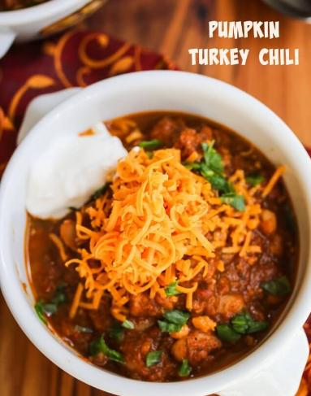

Home
Pumpkin Turkey Chili

Description
Absolutely delicious. I know it doesn't sound appetizing, but it's unbelievable how tasty it is, and so easy too! An interesting take on the great comfort food!
What you'll need
- 1 tablespoon vegetable oil
- 1 cup chopped onion
- 1/2 cup chopped green bell pepper
- 1/2 cup chopped yellow bell pepper
- 1 clove garlic, minced
- 1 pound ground turkey
- 1 (14.5 ounces) can diced tomatoes
- 2 cups pumpkin puree
- 1 1/2 tablespoons chili powder
- 1/2 teaspoon ground black pepper
- 1 dash salt
- 1/2 cup shredded cheddar cheese
- 1/2 cup sour cream
Instructions
- Heat the oil in a large skillet over medium heat, and saute the onion, green bell pepper, yellow bell pepper, and garlic until tender.
- Stir in the turkey, and cook until evenly brown.
- Drain, and mix in tomatoes and pumpkin.
- Season with chili powder, pepper, and salt.
- Reduce heat to low, cover, and simmer 20 minutes.
- Serve topped with cheddar cheese and sour cream.